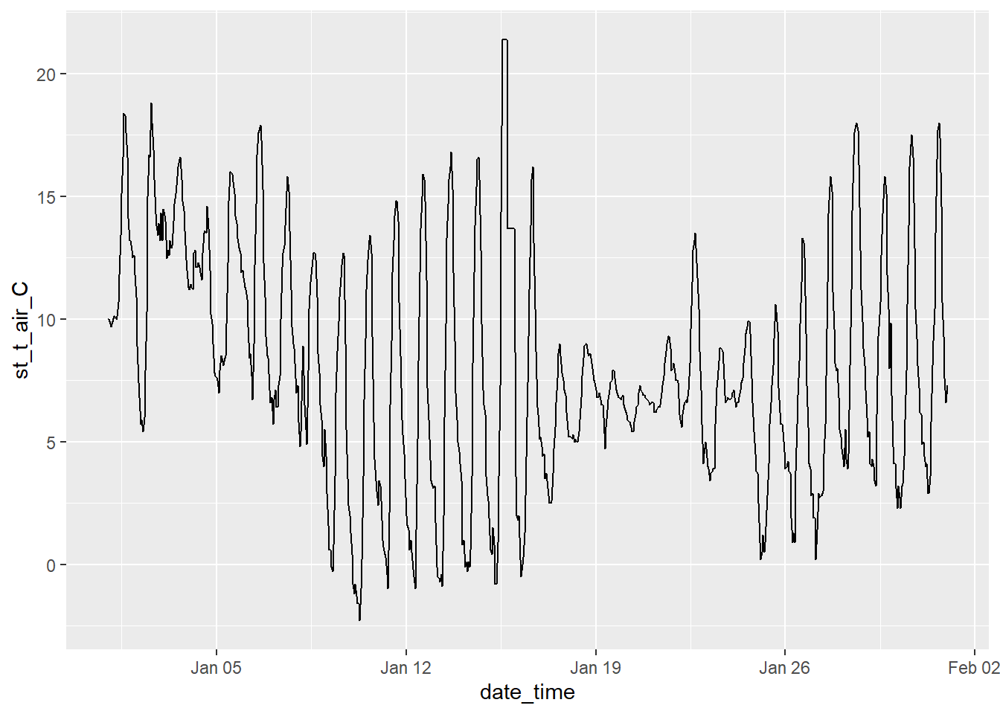

library(DBI)
library(RPostgres)
library(glue)
library(cli)
library(dplyr)
library(lubridate)
library(ggplot2)Download Cleaned CIMIS Data
Andy Lyons ![]()
Summary
This notebook demonstrates how to download data from the ‘Cleaned CIMIS’ table which is hosted on PGFarm. These data are available from a public PostgresSQL database, and do not require a login or API key.
TipOther Ways to Download the Data
The ‘Cleaned CIMIS’ data is in a standard PostgresSQL database, which can be accessed through several programming languages and front ends, including Python, psql, JavaScript, etc. For further details, see the Access Examples on PGFarm.
You can also view a snapshot of the amount of cleaned CIMIS data on the PG Farm Cleaned CIMIS Data Dashboard.
NoteOther Tasks
This notebook does not have sample code to predict bark temperature from ambient conditions for cherry trees, nor compute chill portions based on the predicted bark temperature. For those tasks, you’ll need to install the cherrychill R package (which is not public, contact Andy for details).
This notebook also does not have the code to download and clean raw CIMIS data. This is done automatically on a nightly basis.
Setup
First, load the libraries we’re going to need below.
Load Convenience Functions
To help you download the data, there are two convenience functions available on Github: cleancimis_qry() and cleancimis_stn():
source("https://raw.githubusercontent.com/UCANR-IGIS/sketchbook/refs/heads/main/cleancimis_qry.R")
source("https://raw.githubusercontent.com/UCANR-IGIS/sketchbook/refs/heads/main/cleancimis_stn.R")Get the Stations
Grab the list of stations that are saved in the database:
cimis_stn_tbl <- cleancimis_stn()• Querying CIMIS data on PG Farmℹ This can take up to 30 seconds if the database has been asleep.WARNING: database "tree-chill" has a collation version mismatch
DETAIL: The database was created using collation version 2.36, but the operating system provides version 2.41.
HINT: Rebuild all objects in this database that use the default collation and run ALTER DATABASE "tree-chill" REFRESH COLLATION VERSION, or build PostgreSQL with the right library version.
WARNING: database "tree-chill" has a collation version mismatch
DETAIL: The database was created using collation version 2.36, but the operating system provides version 2.41.
HINT: Rebuild all objects in this database that use the default collation and run ALTER DATABASE "tree-chill" REFRESH COLLATION VERSION, or build PostgreSQL with the right library version.ℹ Retrieved 37 unique station idsView the list of stations:
cimis_stn_tbl$station_n [1] 2 5 6 15 39 47 70 71 80 105 116 125 126 129 131 139 140 143 146
[20] 182 194 195 205 209 211 212 214 226 229 235 242 243 247 248 249 252 262Download Data for Station #105
To download data for a single station, let’s first take a look at the arguments we can use with cleancimis_qry():
args(cleancimis_qry)function (station_n = NULL, start_dt = NULL, end_dt = NULL, quiet = FALSE)
NULLNow we’re ready to download data for station #105:
## Download data for one station
cimis_data_tbl <- cleancimis_qry(station_n = 105)• Querying CIMIS data on PG Farmℹ This can take up to 30 seconds if the database has been asleep.ℹ Retrieved 5808 rows head(cimis_data_tbl)View the range of dates for this station:
range(cimis_data_tbl$date_time)[1] "2025-10-28 02:00:00 PDT" "2026-07-13 01:00:00 PDT"
NoteA Gap in the Data
Note that CIMIS changed their API in June 2026, and stopped supporting the old API in mid-July. Hence there is a break in the data from mid-July onward.
We are working on updating the daily download script to use the new API. Once that is done, we’ll be able to back fill the missing data.
TipGetting Data for Multiple Stations
Note if you want to download data for multiple stations simultaneously, you can pass a vector of integers to station_n. Example:
cimis_data_tbl <- cleancimis_qry(station_n = c(80, 105))
Download Data for a Date Range
Suppose we wanted to download data for just January 2026. Fortunately, cleancimis_qry() has two optional arguments we can use to ask for data for a specific time period.
First we need to create objects for the start and end time:
jan01_dt <- lubridate::ymd_hm("2026/01/01 00:00", tz = "America/Los_Angeles")
jan31_dt <- lubridate::ymd_hm("2026/01/31 23:59", tz = "America/Los_Angeles")
TipDon’t Forget the Time!
CIMIS weather variables are recorded hourly. Therefore when querying the data you must always pass date-time values, even if you are interested in filtering by date. When constructing time values, remember that every day starts at midnight (00:00) and ends at 11:59pm (23:59). Example:
end_dt <- lubridate::ymd_hm("2026/01/31 23:59", tz = "America/Los_Angeles")
Now we are ready to get the data for this month:
stn105_jan26_tbl <- cleancimis_qry(start_dt = jan01_dt, end_dt = jan31_dt, station_n = 105)• Querying CIMIS data on PG Farmℹ This can take up to 30 seconds if the database has been asleep.ℹ Retrieved 744 rows head(stn105_jan26_tbl)tail(stn105_jan26_tbl)
To verify the data are complete, we can plot air temperature:
ggplot(stn105_jan26_tbl, aes(x = date_time, y = st_t_air_C)) +
geom_line()
What Next?
You can use cleancimis_qry() to query the cleaned CIMIS data by station and/or date range. What you get back is a tibble (data frame).
Next, you can use any of the usual methods from the tidyverse to further filter the data, group rows, compute summaries, etc. You can also export it to csv or other format using readr or similiar packages.